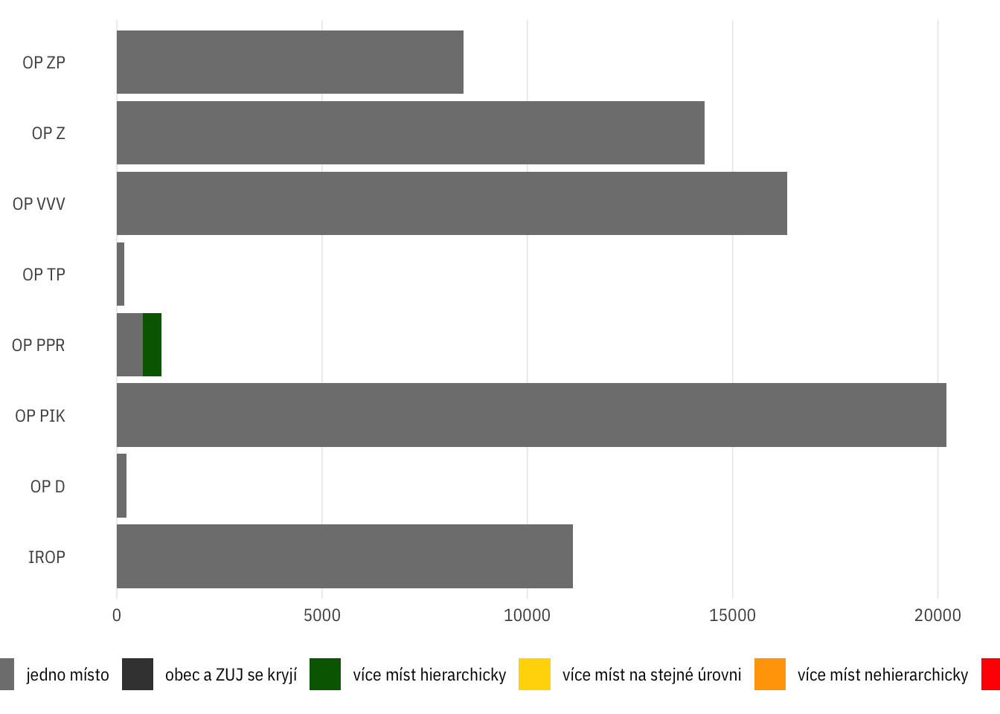

Vstupní analýza struktury dat
dt <- read_parquet(here::here("data-processed",
"misto_fix-02-gnames.parquet"))
dtl <- read_parquet(here::here("data-processed",
"misto_fix-02-gnames_long-geo.parquet"))
ops <- read_parquet(here::here("data-processed",
"op-codes.parquet"))source("read_metadata.R")Prep: vygenerovat metadata projektů pro další použití
prj_esif_meta <- dt %>%
distinct(op_id, prj_id) %>%
separate(prj_id, sep = "/", into = c("prog", "drop_1", "drop_2", "vyzva", "prj_num"),
remove = F) %>%
separate(prog, sep = "\\.", into = c("drop_3", "op_tnum", "op_po", "op_kat")) %>%
select(-starts_with("drop_")) %>%
separate(vyzva, sep = "_", into = c("vyzva_rok", "vyzva_cislo"), remove = F) %>%
mutate(vyzva_id = paste(op_tnum, vyzva, sep = "_"))## Warning: Expected 5 pieces. Missing pieces filled with `NA` in 2 rows [37325, 37326].## Warning: Expected 4 pieces. Missing pieces filled with `NA` in 2 rows [37325, 37326].write_parquet(prj_esif_meta, here::here("data-processed", "prj-esif-meta.parquet"))Na jakých územních úrovních jsou projekty lokalizovány?
Memo: kolik máme projektů?
dtl %>%
ungroup() %>%
summarise(length(unique(prj_id)))Na které nejvyšší úrovni jsou projekty lokalizovány?
dt_geostructure_byprj <- dtl %>%
filter(!is.na(value) & typ == "id") %>%
# sample_n(10) %>%
# mutate(level_num = as.numeric(level)) %>%
select(prj_id, level, op_id, value) %>%
group_by(prj_id, op_id) %>%
summarise(unique_units = length(unique(value)),
n_levels = length(unique(level)),
maxlevel = max(level), minlevel = min(level),
n_units = n(),
.groups = "drop") %>%
mutate(multilevel = n_levels > 1) %>%
ungroup()
write_parquet(dt_geostructure_byprj, here::here("data-processed", "dt_geostructure_by-prj.parquet"))dt_geostructure_bylvl <- dtl %>%
filter(!is.na(value) & typ == "id") %>%
select(prj_id, level, op_id, value) %>%
group_by(prj_id, op_id, level) %>%
summarise(n_units = length(unique(value))) %>%
group_by(prj_id, op_id) %>%
mutate(min_level = level == min(level)) %>%
mutate(multiunit = n_units > 1) %>%
ungroup()## `summarise()` regrouping output by 'prj_id', 'op_id' (override with `.groups` argument)write_parquet(dt_geostructure_bylvl, here::here("data-processed", "dt_geostructure_by-lvl.parquet"))Jaký podíl projektů nemá lokalizaci na obec nebo ZÚJ?
prj_no_obec <- dtl %>%
filter(typ == "id") %>%
drop_na(value) %>%
group_by(prj_id) %>%
summarise(noobecnozuj = all(!(level %in% c("zuj", "obec"))), .groups = "drop") %>%
filter(noobecnozuj) %>%
select(prj_id)
dim(prj_no_obec)## [1] 37071 1write_parquet(prj_no_obec, here::here("data-processed", "prj_id_noobec.parquet"))dt_geostructure_byprj %>%
mutate(notoplevel = prj_id %in% prj_no_obec$prj_id) %>%
count(op_id, wt = mean(notoplevel)) %>%
bind_rows(dt_geostructure_byprj %>%
mutate(notoplevel = prj_id %in% prj_no_obec$prj_id) %>%
count(wt = mean(notoplevel)) %>%
mutate(op_id = "Celkem")) %>%
mutate(op_id = fct_reorder(op_id, n)) %>%
ggplot(aes(n, op_id)) +
geom_col() +
theme_ptrr("x") +
scale_x_percent_cz(limits = c(0, 1))library(ggupset)
dtl_for_upset <- dtl %>%
filter(typ == "id" & !is.na(value)) %>%
select(op_id, prj_id, level) %>%
distinct() %>%
mutate(level = as.character(level)) %>%
group_by(prj_id) %>%
summarise(geos = list(level)) %>%
left_join(dt %>% filter(prj_radek == 1) %>% select(prj_id, op_id)) %>%
# mutate(nr = map_int(geos, nrow)) %>%
# arrange(desc(nr)) %>%
filter(TRUE)## `summarise()` ungrouping output (override with `.groups` argument)## Joining, by = "prj_id"ggplot2::update_geom_defaults("line", list(colour = "black"))
ggplot(dtl_for_upset) +
geom_bar(mapping = aes(x = geos, fill = op_id), position = "stack") +
scale_x_upset(order_by = "degree", sets = geolevels) +
# scale_y_continuous(limits = c(0, 6e4)) +
# scale_y_log10(limits = c(1, 1e5), n.breaks = 10,
# labels = scales::label_number(1)) +
# scale_y_continuous(trans = scales::log_trans(), breaks = scales::pretty_breaks()) +
ptrr::theme_ptrr() +
scale_fill_brewer(type = "qual")ggplot2::update_geom_defaults("line", list(colour = "darkblue"))ggplot2::update_geom_defaults("line", list(colour = "black"))
ggplot(dtl_for_upset) +
geom_bar(mapping = aes(x = geos)) +
scale_x_upset(order_by = "degree", sets = geolevels) +
# scale_y_log10(n.breaks = 6, labels = scales::label_number(1)) +
# scale_y_continuous(trans = scales::log_trans(), breaks = scales::pretty_breaks()) +
ptrr::theme_ptrr(multiplot = T) +
facet_wrap(~op_id, scales = "free")## geom_path: Each group consists of only one observation. Do you need to adjust the group aesthetic?
## geom_path: Each group consists of only one observation. Do you need to adjust the group aesthetic?
ggplot2::update_geom_defaults("line", list(colour = "darkblue"))dt_geostructure_byprj %>%
count(op_id, maxlevel) %>%
mutate(maxlevel = fct_relevel(maxlevel, geolevels)) %>%
spread(maxlevel, n)Ve kterých projektech je více územních úrovní?
dtl %>%
filter(!is.na(value) & typ == "id") %>%
distinct(prj_id, level)Jaký podíl projektů má více než jednu úroveň lokalizace?
multilevel <- dtl %>%
left_join(dt_geostructure_byprj %>% select(prj_id, multilevel)) %>%
ungroup()## Joining, by = "prj_id" # filter(multilevel) %>%
multilevel_ids <- unique(multilevel[multilevel$multilevel,]$prj_id)multilevel %>%
distinct(op_id, prj_id, multilevel) %>%
summarise(podil = mean(multilevel))multilevel %>%
distinct(op_id, prj_id, multilevel) %>%
group_by(op_id) %>%
summarise(podil = mean(multilevel), .groups = "drop")Množství územních jednotek pro jednotlivé projekty
Histogram
Body
# projekty, kde je víc jednotek na úrovni N než na jakékoli úrovni < N, tj.
# např. dva kraje a jedna ZÚj
# tohle by se mělo (logicky?) odchytit v obecné kontrole hierarchie, takže není
# třeba to dál integrovat
weird_projs <- dt_geostructure_bylvl %>%
group_by(prj_id) %>%
mutate(total_geo_ids = sum(n_units)) %>%
filter(total_geo_ids > 5) %>%
spread(level, n_units) %>%
filter(kraj > obec | kraj > orp | kraj > okres | obec > zuj | kraj > zuj | okres > orp |
orp > obec | orp > zuj | okres > obec | okres > zuj)
weird_projsweird_projs %>%
ungroup() %>%
count(op_id, sort = T)weird_projs %>%
filter(op_id == "OP_VVV")weird_projs_full <- dt %>% filter(prj_id %in% weird_projs$prj_id)
weird_projs_fullValidita územní hierarchie
Analýza
data_for_geocheck <- dtl %>%
filter(prj_id %in% multilevel_ids,
typ == "id") %>%
drop_na(value) %>%
# mutate(level_num = as.numeric(level)) %>%
select(prj_id, value, level)head(data_for_geocheck)n_multilevel <- n_distinct(data_for_geocheck$prj_id)
n_multilevel## [1] 9588source(here::here("check-geo-hierarchy-fns.R"))
data_geocheck_file <- here::here("data-processed", "dt-geohierarchy-check.parquet")
if (file.exists(data_geocheck_file)) {
data_geocheck <- read_parquet(data_geocheck_file)
} else {
tic()
pb <- make_pb(n_multilevel)
data_geocheck <- data_for_geocheck %>%
ungroup() %>%
group_by(prj_id) %>%
nest(geodata = c(level, value)) %>%
mutate(geocheck = map(geodata, check_all_parents, ids)) %>%
unnest(c(geocheck)) %>%
select(-geodata)
toc()
beep()
write_parquet(data_geocheck, data_geocheck_file)
}progs <- distinct(dt, prj_id, op_id)data_with_geocheck <- data_for_geocheck %>%
left_join(data_geocheck)## Joining, by = c("prj_id", "value", "level")data_with_geocheck <- data_with_geocheck %>%
left_join(progs) ## Joining, by = "prj_id"places_geocheck <- data_with_geocheck %>%
group_by(op_id, prj_id, value, level) %>%
summarise(value_has_valid_parent = any(levels_ok, na.rm = F), .groups = "drop")
prjs_geocheck <- places_geocheck %>%
group_by(op_id, prj_id) %>%
summarise(all_ok = !any(!value_has_valid_parent, na.rm = T))## `summarise()` regrouping output by 'op_id' (override with `.groups` argument)prjs_geocheck %>%
count(op_id, all_ok) %>%
spread(all_ok, n)prjs_geocheck %>%
summarise(mean = 1-mean(all_ok), count = n())## `summarise()` ungrouping output (override with `.groups` argument)prjs_geocheck %>%
group_by(op_id) %>%
summarise(mean = 1-mean(all_ok), count = n())## `summarise()` ungrouping output (override with `.groups` argument)write_parquet(places_geocheck,
here::here("data-processed", "places-geo-check.parquet"))prjs_fishy_hierarchies <- prjs_geocheck %>%
filter(!all_ok) %>%
distinct(prj_id, all_ok)
prjs_nogeo <- dt %>%
mutate(nogeo = is.na(g_zuj_id) & is.na(g_obec_id) & is.na(g_orp_id) & is.na(g_okres_id) & is.na(g_kraj_id)) %>%
group_by(prj_id) %>%
summarise(no_geo = all(nogeo))## `summarise()` ungrouping output (override with `.groups` argument)table(prjs_nogeo$no_geo)##
## FALSE TRUE
## 86645 27nrow(prjs_fishy_hierarchies)## [1] 119[x] TODO: detect ZUJ == OBEC [x] TODO: detect one level, multiple units [+ validate whether within same higher-level unit] [-] integrate “weird projects” (above) in geostatus indicator = more units at higher level than lower level - nerelevantní, podchyceno v kontrole hierarchie - bez ohledu na to, kolik je jednotek v nižších a vyšších úrovních, pokud nějaká jednotka nemá mezi jednotkami na vyšší úrovni validní nadřazenou jednotku, je označena jako nehierarchická
dtl_zujobec <- dtl %>%
filter(typ == "id") %>%
drop_na(value) %>%
select(prj_id, value, level) %>%
group_by(prj_id) %>%
mutate(n_levels = length(unique(level)),
n_values = length(unique(value)),
zujobec = setequal(level, c("zuj", "obec")) & n_values == n()/2,
# zujobec = (n_levels == 2 & n_values == 1),
onelevelmultiunits = (n_levels == 1 & n_values > 1)) %>%
distinct(prj_id, onelevelmultiunits, zujobec)dtl_zujobec %>%
ungroup() %>%
count(onelevelmultiunits, zujobec)Výsledky
prjs_geostatus <- dt %>%
distinct(prj_id, op_id) %>%
left_join(prjs_nogeo) %>%
left_join(prjs_geocheck) %>%
left_join(dtl_zujobec) %>%
mutate(multilevel = prj_id %in% multilevel_ids,
geostatus = case_when(no_geo ~ "bez místa",
zujobec ~ "obec a ZUJ se kryjí",
onelevelmultiunits ~
"více míst na stejné úrovni",
!multilevel ~ "jedno místo",
all_ok ~ "více míst hierarchicky",
!all_ok ~ "více míst nehierarchicky",
) %>%
as.factor() %>% fct_rev() %>%
fct_relevel("bez místa") %>%
fct_relevel("obec a ZUJ se kryjí", after = 4),
geostatus_wrap = fct_relabel(geostatus, str_wrap, width = 10))## Joining, by = "prj_id"## Joining, by = c("op_id", "prj_id")## Joining, by = "prj_id"write_parquet(prjs_geostatus,
here::here("data-processed", "projects-geo-check-groups.parquet"))gst_bar <- prjs_geostatus %>%
ggplot() +
scale_fill_manual(values = rev(c("grey75", "grey50", "grey25", "darkgreen",
"gold", "orange", "red"))) +
guides(fill = guide_legend(reverse = T, nrow = 1)) +
theme_ptrr("x", legend.position = "bottom", legend.title = element_blank())Procentuálně
gst_bar +
geom_bar(aes(y = op_id, fill = geostatus_wrap), position = "fill") +
scale_x_percent_cz()Absolutně
gst_bar +
geom_bar(aes(y = op_id, fill = geostatus), position = "identity")
Tabulka
prjs_geostatus %>%
count(op_id, geostatus) %>%
spread(op_id, n, fill = 0)